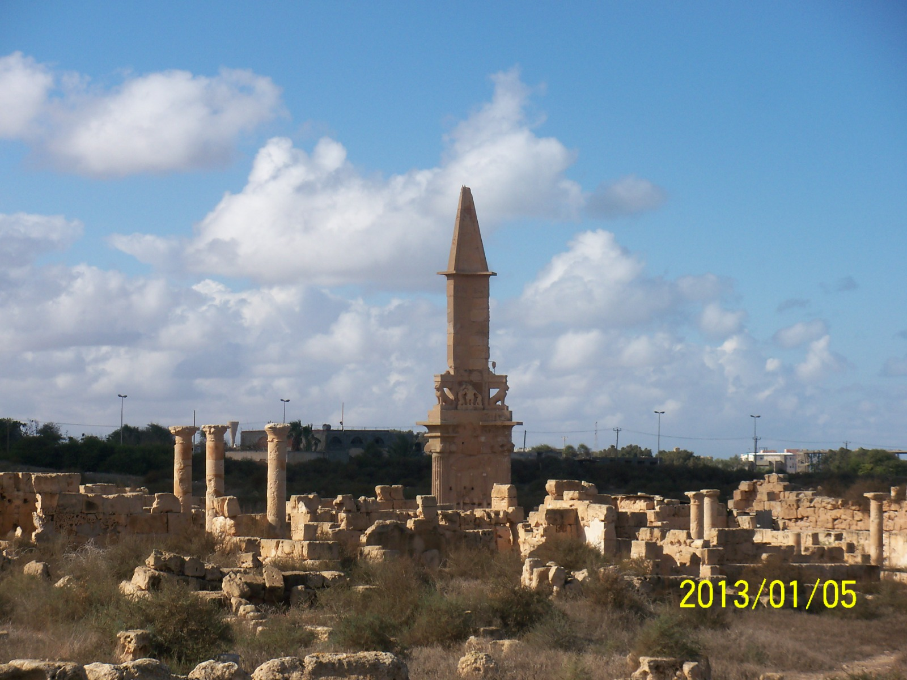

A Journey Through Time
A Journey Through Time
Visit Libya | زور ليبيا
ليبيا أرض الحضارات وموطن السحر والجمال
من عبق التاريخ إلى مستقبل سياحي واعد
اكتشف أرضًا جمعت بين شواطئ المتوسط، وعمق الصحراء الكبرى، وروعة المدن القديمة، وكرم الإنسان الليبي.
5مواقع تراث عالمي
1,770 كمساحل متوسطي
صحراء وواحاتتنوع طبيعي ضخم
مدن أثريةتجارب تاريخية متجددة
جمال الطبيعة والتاريخ
جمال الطبيعة والتاريخ في انتظارك
من جبال أكاكوس إلى شواطئ المتوسط، ومن المدن القديمة إلى الواحات، تقدم ليبيا تجربة سياحية تجمع بين الطبيعة والتاريخ والثقافة والضيافة.
الصحراء الكبرى
المدن القديمة
الواحات والبحيرات
التراث الثقافي
الفعاليات والمهرجانات
نبذة عن ليبيا
ليبيا دولة تقع في شمال أفريقيا، عاصمتها طرابلس، وتتمتع بتاريخ طويل وثقافة متنوعة.
تمتاز بسواحلها الجميلة على البحر الأبيض المتوسط، وبصحرائها الكبرى في الداخل، كما تشتهر بمواقعها الأثرية مثل لبدة وصبراتة وشحات وغدامس. اللغة العربية هي اللغة الرسمية، وتجمع الثقافة الليبية بين التأثيرات العربية والأمازيغية.
التاريخ العريق
ليبيا أرض تشهد على آلاف السنين من حضارات متعددة في كل زاوية.
العادات والتقاليد
الضيافة والكرم والاحتفالات المحلية تصنع تجربة سفر فريدة.
المطبخ المحلي
أطباق محلية غنية بالنكهات تعكس التعدد الثقافي الليبي.
الوجهات السياحية
اكتشف أبرز وجهات ليبيا السياحية
وجهات تجمع بين التاريخ والثقافة والساحل والصحراء لتكمل تجربة سياحية متكاملة.

عاصمة / تاريخية / ساحلية
طرابلس
عاصمة نابضة بالحياة تجمع بين الواجهة البحرية والأسواق القديمة والتراث المعماري.

تراث عالمي / واحة صحراوية
غدامس
واحة قديمة ذات معمار فريد تروي قصة مجتمع متين وبيئة ساحرة.

آثار رومانية / تراث عالمي
لبدة الكبرى
أحد أعظم المواقع الرومانية على ساحل البحر المتوسط، يحتفظ ببريقه عبر الأجيال.

آثار / ساحلية
صبراتة
مدرج روماني مطل على البحر يجمع بين المشهد التاريخي والجمال البحري.

إغريقية / الجبل الأخضر
شحات / قورينا
مواقع أثرية جبلية تمتاز بإطلالات ساحرة وتاريخ إغريقي عميق.

فن صخري / صحراء
أكاكوس
تشكيلات صخرية ساحرة ونقوش تعود لآلاف السنين في قلب الصحراء.

واحة / ثقافة محلية
أوجلة
واحة صحراوية تنبض بالحياة المحلية والتقاليد البدوية العريقة.

سياحة بحرية
الشواطئ الليبية
سواحل ذهبية ومياه فيروزية تأسر الزائر وتسهل الاسترخاء والاستجمام.

طبيعة / واحات
البحيرات الطبيعية
مناظر ساحرة لبحيرات طبيعية وواحات تستحق التجوال والانتعاش.

مغامرات / رحلات صحراوية
الصحراء الكبرى
تجربة مغامرة في قلب رمال مترامية وأفق لا ينتهي في أعرق صحارى العالم.
المواقع المميزة
مواقع التراث العالمي في ليبيا
تتمتع ليبيا بتراث وتاريخ عريق متنوع، بأطلال شاهدة على الحضارات التي مرت عليها. خمسة مواقع ليبية مدرجة ضمن قائمة التراث العالمي تمثل نقاط جذب رئيسية للسياحة الثقافية والتاريخية.
مدينة صبراتة الأثرية
آثار رومانية ومسرح تاريخي على شاطئ البحر.
مدينة لبدة الكبرى
أطلال رومانية واسعة تحتفظ بمحطة رائعة من تاريخ المتوسط.
مدينة شحات / قورينا
مواقع أثرية يونانية تقع في قلب الجبل الأخضر.
غدامس القديمة
حي أثري يعبر عن عبقرية التصاميم العمرانية التقليدية.
تادرارت أكاكوس الصخرية
فن صخري يعود لآلاف السنين يحفظ قصة الإنسان الأول.
التجارب المميزة
أنشطة وتجارب متميزة ستبقى في ذاكرتك
اختبر ليبيا بأفضل ما فيها عبر وجهاتها التاريخية والطبيعية والثقافية.

استكشاف المدن الأثرية
رحلات الصحراء والواحات

الشواطئ والأنشطة البحرية

تجربة المطبخ الليبي

الصناعات التقليدية والحرف

الفروسية والرياضات الصحراوية

التصوير والسياحة الثقافية
الفعاليات والمهرجانات
الفعاليات والمهرجانات
تتنوع الفعاليات السياحية في ليبيا بين المهرجانات الثقافية والرياضات الصحراوية والفروسية والأنشطة البحرية والاحتفالات الاجتماعية، مما يمنح الزائر فرصة لرؤية ليبيا بعيون شعبها.
مهرجانات الخريف في هون وغات
مهرجان أوجلة الثقافي السياحي
مهرجان جرمة السياحي
مهرجان تساوة بوادي عتبة
الفروسية الشعبية
الرياضات الصحراوية
الأنشطة البحرية على الساحل
معلومات مهمة
معلومات مهمة قبل السفر
نقدم لك دليلاً مبسّطًا للتخطيط لرحلة ناجحة في ليبيا.
التنقل بين المدن يتوفر عبر خطوط برية وجوية، إضافة إلى خدمات النقل السياحي واستئجار السيارات.
المطارات الرئيسية في طرابلس وبنغازي ومصراتة توفر وصولاً دوليًا وسهولة انتقال داخل البلاد.
تعرف على الثقافة المحلية، أوقات السفر المثلى، والملابس المناسبة لكل منطقة.
اطلع على متطلبات التأشيرة والأوراق الرسمية قبل السفر وتأكد من شروط الدخول لكل جنسية.
اعتمد على منظمي رحلات محليين معتمدين لتنظيم الزيارات إلى المواقع الأثرية والصحراوية.
احرص على الاتصال والخدمات المصرفية، واحمل معك دليلًا بسيطًا حول العادات المحلية.
المرشدون المحليون يقدمون رؤية ثمينة للتاريخ والثقافة ويجعلون الرحلة أكثر غنى.
VisitLibyaAI
دليلك الذكي لاكتشاف ليبيا
مساعد افتراضي تجريبي يساعد الزائر على اختيار الوجهات، فهم التراث، تخطيط الرحلة، والتعرف على التجارب السياحية في ليبيا.
VisitLibyaAI
اسأل عن الوجهات، التراث، أو ترتيبات السفر.
معرض الصور
لمحات مصورة من ليبيا